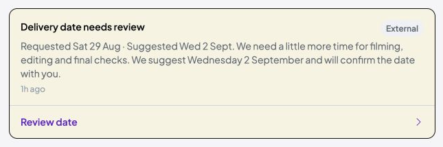
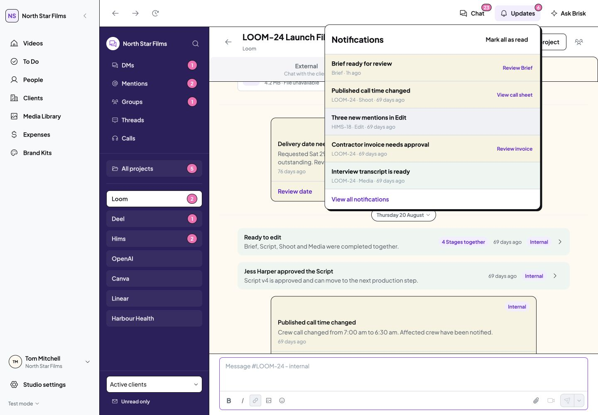

Brisk desktop refinement · 29 October 2026
Colour and clear text
Chat system updates now follow the existing Notifications colour treatment. Severity symbols and the separate Needs attention pill are removed. The title and Internal/External audience label share one row.
Attention uses pale yellow, failure pale pink, success pale green, and information neutral grey. Titles, links and screen-reader status text still explain the meaning. The deadline warning, Brief suggestion and final delivery notice also omit status symbols.
Current Client update

Customer · External Chat · 1133px desktop · Faithful crop; click for full context.
Studio view at 1440px · Studio view at 1133px · Information update
Notification message previews use the same treatment. The existing Review date dialog and Final delivery hand-off still work. Read state, Client sharing and agreement behaviour are unchanged.
Existing Notifications reference

Genuine app capture at 1440px. The computed attention-background colour is identical in Notifications and Chat.
Notification message previews
The previews now match the colour treatment used by Notifications and Chat. These are existing examples selected without changing or saving settings.
Attention · Success · Failure
Verification and limits
Type-check and five affected local route checks passed. Current Notifications were inspected, the warning fill was compared directly, and desktop Chat, Deadline links, Review date and delivery navigation were checked. The Client view has no Internal tab. Inspected tabs logged no browser warnings or errors.
Verification used the separate local demo origin 8783. Working data, original mock records, permissions, assets and dependencies were preserved. No tests, production build, install, commit, push or publication.
Success, attention and information posts were browser-inspected. The failure palette was inspected in the existing notification preview; no failure Chat state was manufactured. Brief icon removal was source-reviewed because the current demo Brief has already been submitted. One cached in-app-browser category navigation needed a fresh review URL, with no data reset or logged error. Mobile verification remains deferred.
Detailed record · Source comparison · Screenshot provenance